Aplicarea legislației profesionale și a drepturilor pacientului în situații din practică; susținerea portofoliului
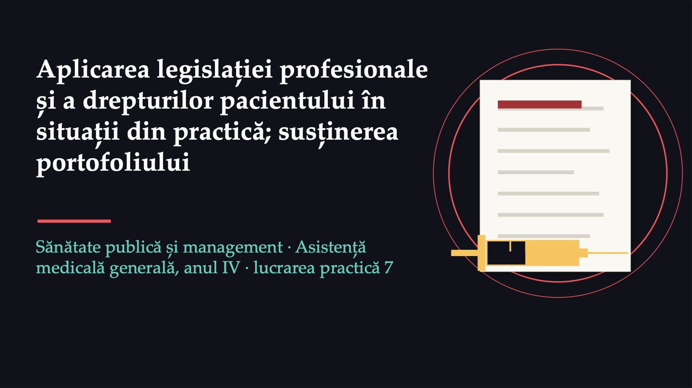
1 / 42Bună ziua. Lucrarea de azi are două părți. În prima oră lucrați pe un dosar real, judecat la Craiova; în a doua, fiecare își susține portofoliul de lucrări practice.
Azi sunteți asistenta de serviciu
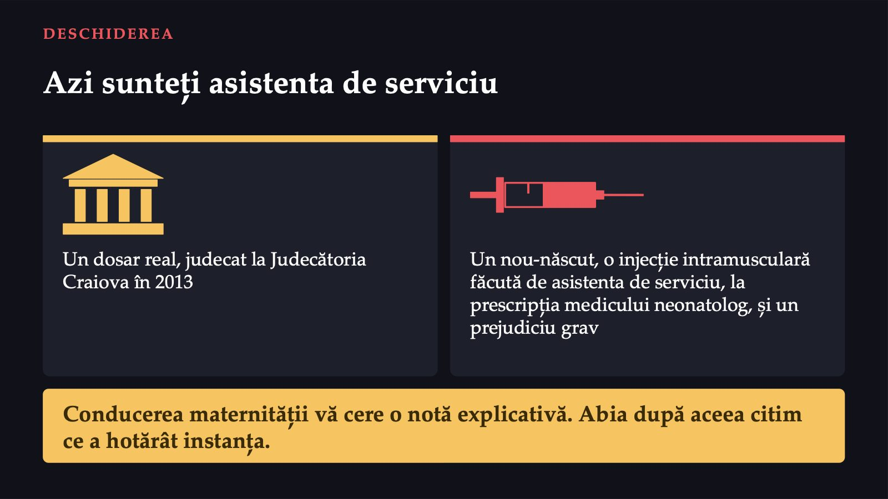
2 / 42Dosarul e real și public. Exercițiul pornește de la o premisă pe care sentința nu o descrie: după plângerea părinților, conducerea maternității îi cere asistentei o notă explicativă. Voi sunteți asistenta de serviciu. Scrieți ce ați făcut, ce ați consemnat și pe ce regulă v-ați sprijinit. Ce a hotărât instanța citim după ce ați scris.
1
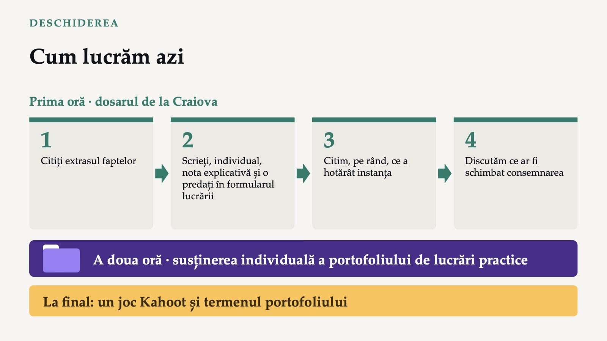
3 / 42Prima oră e lucru individual pe speța reală. Citiți extrasul, scrieți nota și o predați în formular. Apoi citim hotărârea, pe rând: probele, ce a reținut instanța despre medic și despre asistentă, soluția. La sfârșit discutăm ce ar fi cântărit o consemnare mai detaliată. În a doua oră, fiecare își susține portofoliul de lucrări practice. Încheiem cu un joc Kahoot și cu termenul de predare a portofoliului.
Telefonul, azi
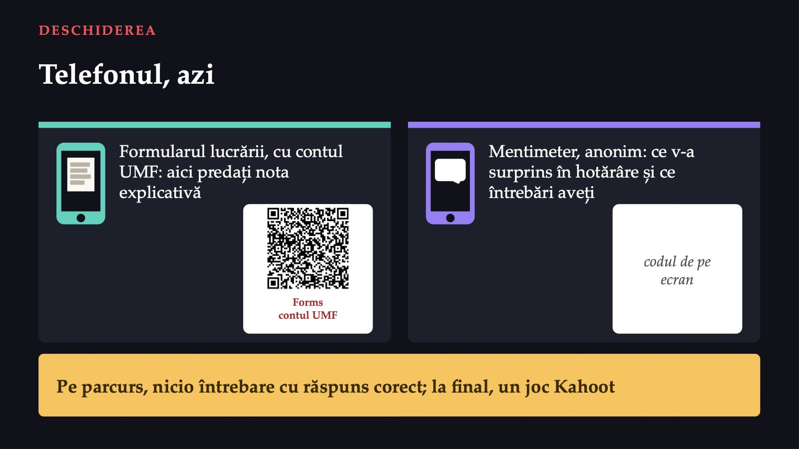
4 / 42Telefonul îl folosiți pentru două lucruri. În formularul lucrării, cu contul UMF, predați nota explicativă; ciorna o puteți scrie pe hârtie. Prin codul Mentimeter trimiteți, anonim, ce v-a surprins în hotărâre și întrebările pe care le aveți. Pe parcurs nu primiți întrebări cu un singur răspuns bun.
Dosarul
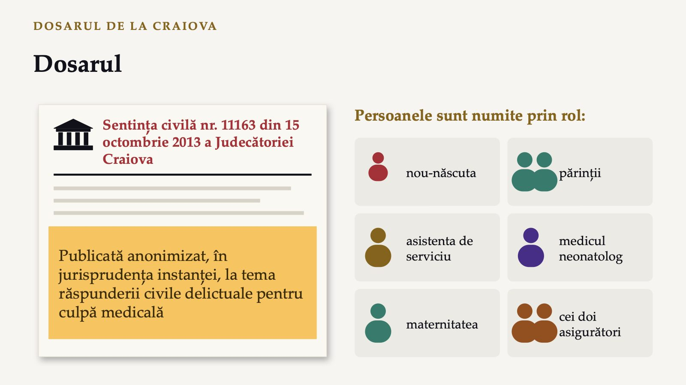
5 / 42Speța e reală și publică. Pe ecran și în extras, oamenii din dosar sunt numiți prin rolul lor, nu prin nume sau inițiale. Sentința aplică legea de la data faptelor, din 2008; regula de azi o găsiți în textele în vigoare, pe care le-ați citit pentru Pregătire.
Extrasul faptelor · 1
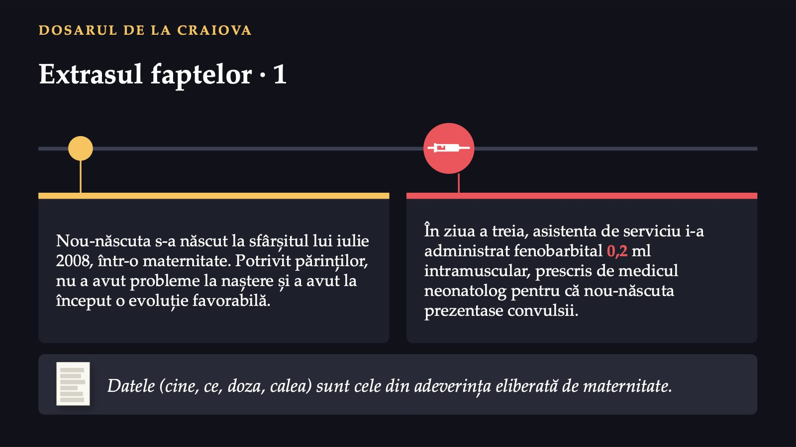
6 / 42Citiți extrasul. Totul vine din dosar: nașterea, injecția din ziua a treia, cine a prescris-o, cine a făcut-o, ce s-a administrat, doza și calea, după adeverința maternității.
Extrasul faptelor · 2
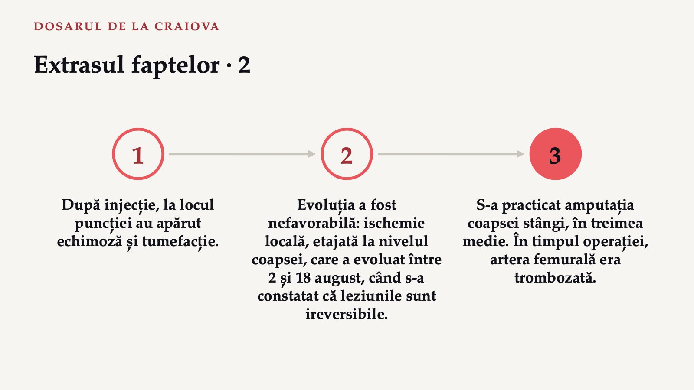
7 / 42Asta știe asistenta în ziua în care i se cere nota: ce a făcut, ce s-a văzut la locul injecției și ce a urmat. Ce s-a aflat în proces nu este în extras.
Premisa exercițiului
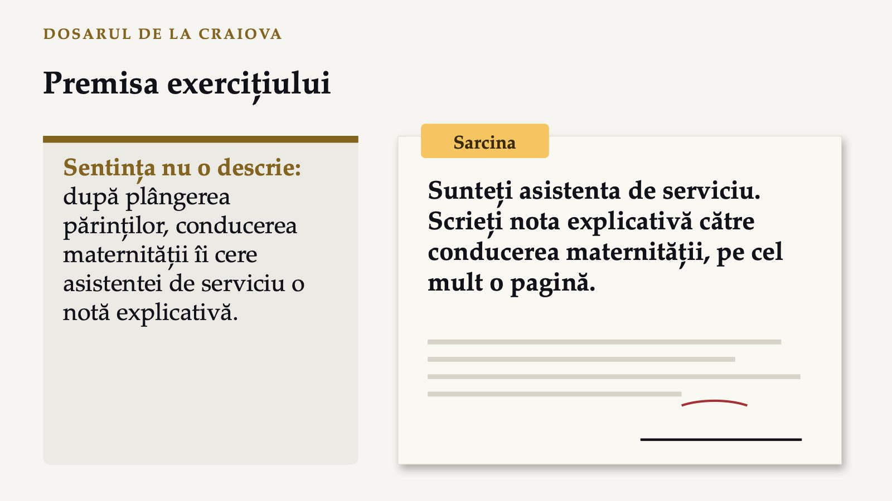
8 / 42Sentința nu spune că a existat o asemenea notă; exercițiul vă pune în locul asistentei, cu faptele din dosar. Scrieți cu ce știa ea atunci, înainte de proces, nu cu ce s-a aflat la sfârșitul lui.
Nota explicativă
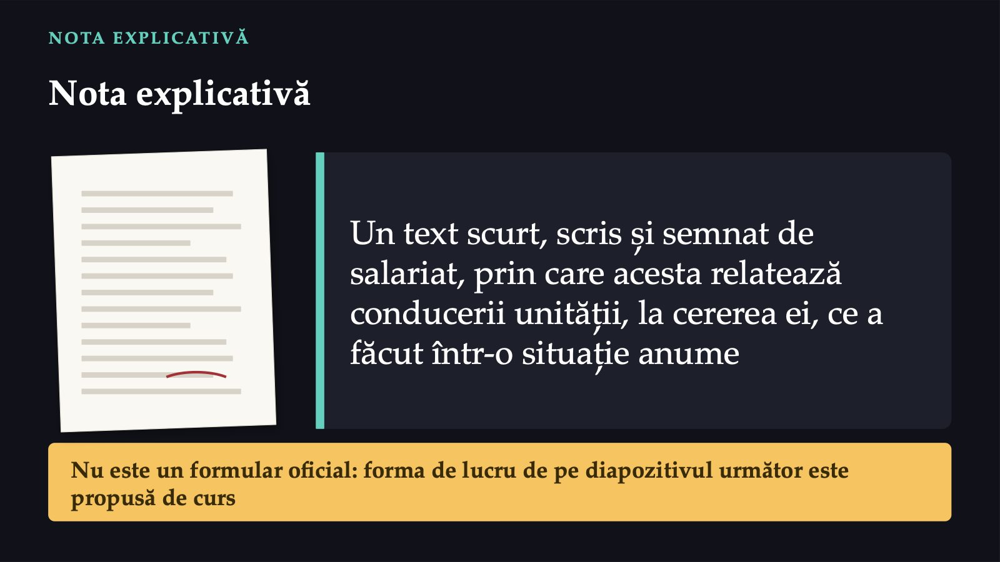
9 / 42Nota explicativă e textul scurt prin care un salariat relatează conducerii, la cererea ei, ce a făcut într-o situație anume. Niciun act normativ consultat pentru această lucrare nu îi fixează forma; forma pe care o vedeți acum e o formă de lucru, propusă de curs.
Ce conține nota
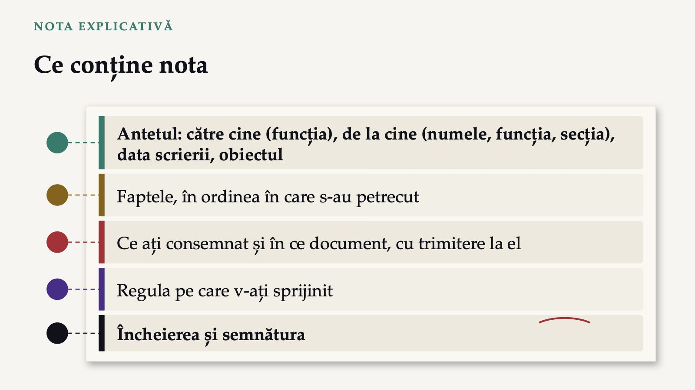
10 / 42Antetul spune către cine, de la cine, data și obiectul, de exemplu „Referitor la plângerea părinților nou-născutei internate pe secție…”. Faptele vin în ordinea în care s-au petrecut: ce s-a prescris, de cine și când; ce ați pregătit și ce ați administrat, cu doza, calea și locul injecției; ce ați observat după aceea, când și cui ați spus. Apoi ce ați consemnat și în ce document, ca persoana care citește nota să poată verifica. Apoi regula pe care v-ați sprijinit. La sfârșit, că stați la dispoziție pentru lămuriri și că documentele la care trimiteți se află în dosarul pacientei; apoi semnătura.
Înainte să scrieți
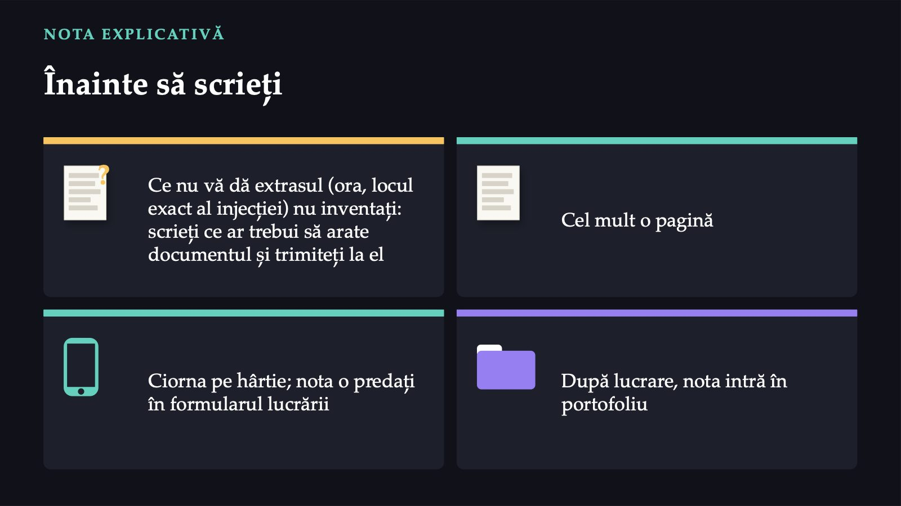
11 / 42Unde extrasul nu vă dă un detaliu, nu îl inventați. Scrieți ce ar trebui să arate documentul și trimiteți la el. Nota o predați în formularul lucrării; după lucrare, ea intră în portofoliu.
Scrieți nota
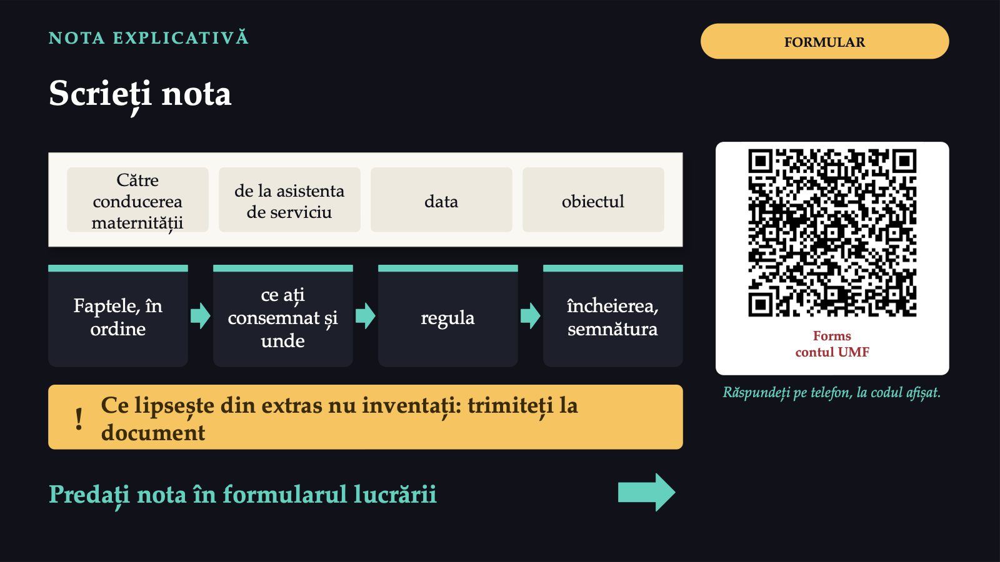
12 / 42Scrieți individual. Când terminați, predați nota în formularul lucrării; începem apoi citirea hotărârii.
Ce a hotărât instanța
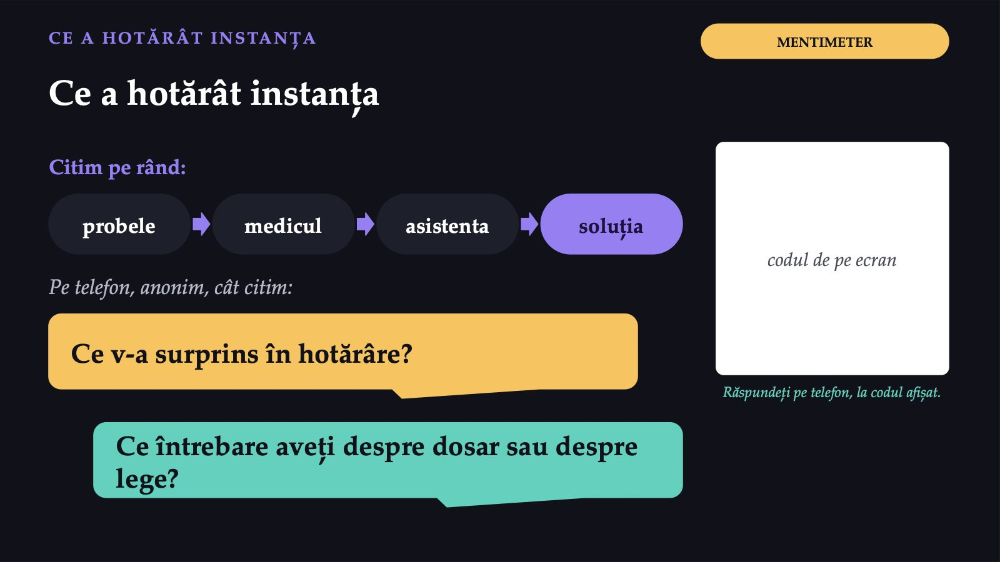
13 / 42Acum citim ce a hotărât instanța, în patru pași: probele, ce a reținut despre medic, ce a reținut despre asistentă și soluția. Cât citim, scrieți anonim, prin codul de pe ecran, ce v-a surprins și ce întrebări aveți despre dosar sau despre lege.
Probele
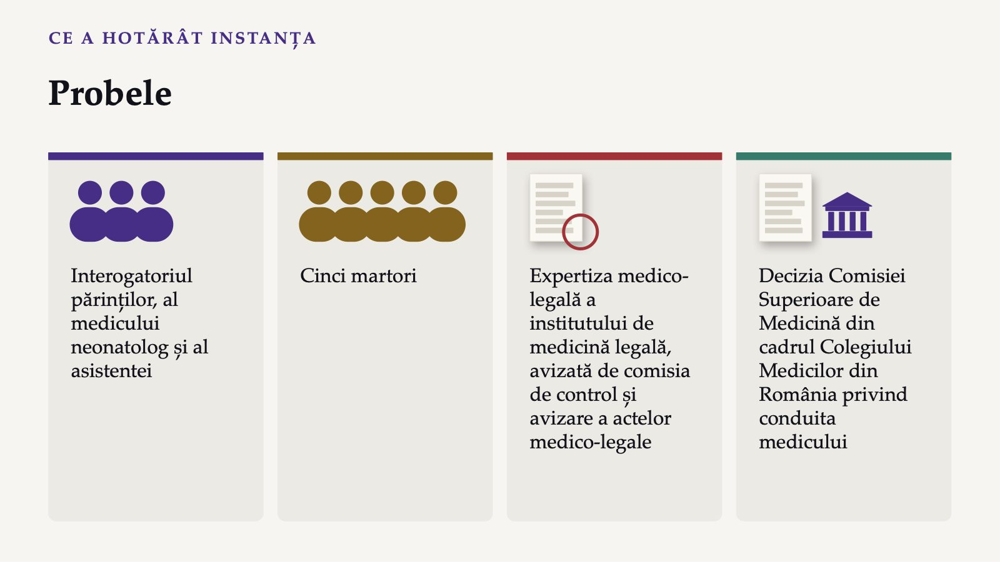
14 / 42Instanța a administrat interogatoriile, a audiat cinci martori și a dispus o expertiză medico-legală, făcută de institutul de medicină legală și avizată de comisia de control și avizare. În dosar se afla și decizia Comisiei Superioare de Medicină din cadrul Colegiului Medicilor din România despre medic. Țineți minte expertiza: pe ea se sprijină restul.
Răspunde maternitatea pentru angajații ei?
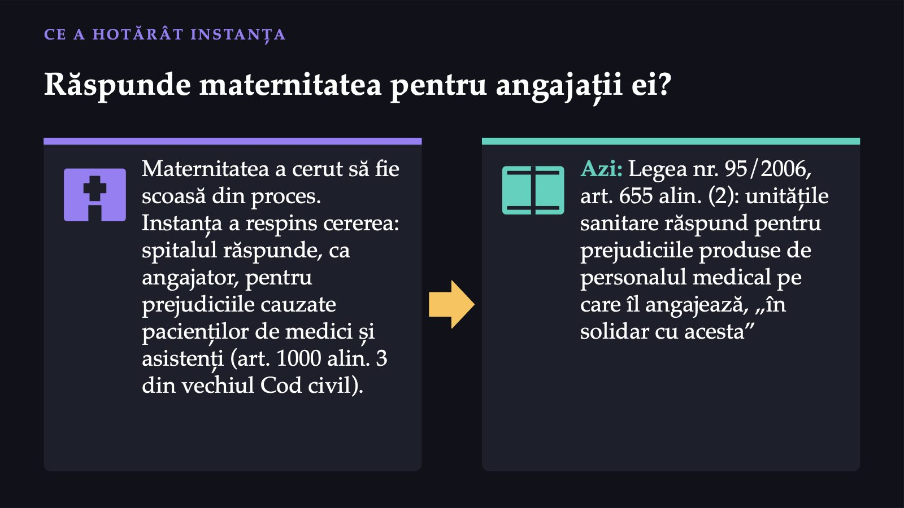
15 / 42Maternitatea a susținut că nu răspunde pentru fapta angajatelor ei. Instanța a respins cererea. Regula de azi stă în Legea nr. 95/2006 privind reforma în domeniul sănătății, la art. 655 alin. (2), în forma în vigoare din 19 decembrie 2025: unitatea sanitară răspunde în solidar cu personalul medical. Asta nu spune încă dacă cineva a greșit.
1
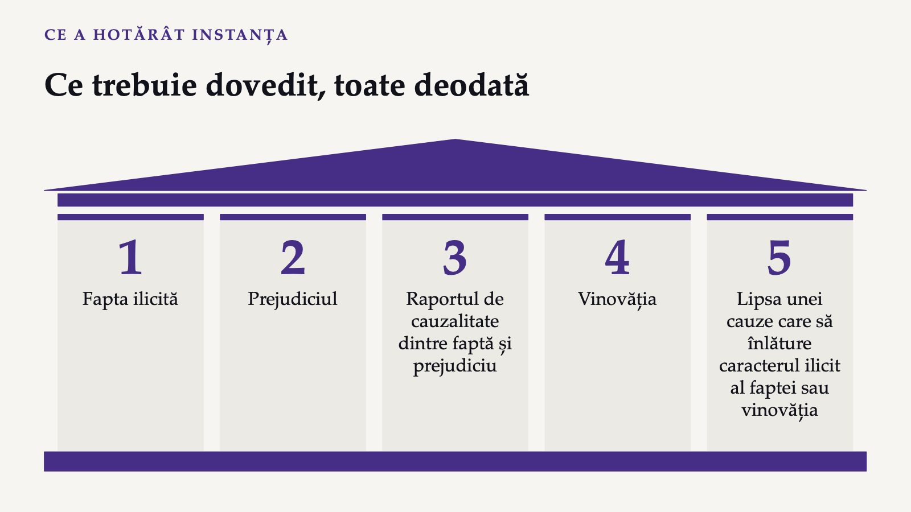
16 / 42Pentru ca medicul și asistenta să răspundă civil, instanța a cerut întrunirea cumulativă a cinci condiții. Motivarea sentinței nu discută prejudiciul, care a fost real și grav; ea se oprește la fapta ilicită și la vinovăție, adică la culpă.
„
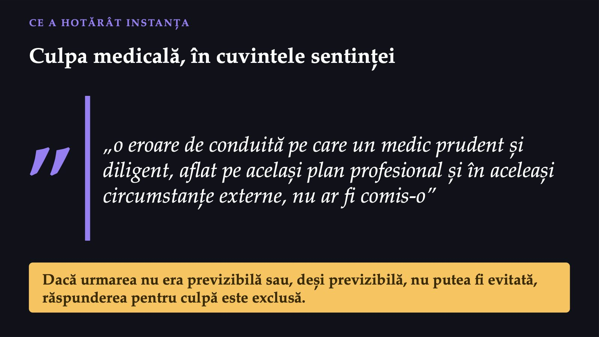
17 / 42Instanța citează această definiție. Din aceeași motivare reiese că cel care a acționat potrivit practicilor comune, acceptate ca potrivite de un corp de doctori respectabili, rezonabili și responsabili, nu poate fi considerat neglijent doar pentru că alți specialiști ar fi preferat altă metodă. Sentința o spune despre medic; cursul o citește și pentru asistentă.
Ce a reținut instanța despre medic
![CE A HOTĂRÂT INSTANȚA Ce a reținut instanța despre medic Indicația corectă: nou-născuta prezentase convulsii; fenobarbitalul este, după expertiză, o practică uzitată internațional și de elecție Doza adecvată și injecția la locul de elecție (decizia Comisiei Superioare de Medicină) A recunoscut complicația și a cerut în repetate rânduri consult de chirurgie pediatrică; chirurgii nu au pus diagnosticul de ischemie Expertiza: a urmărit cu atenție evoluția clinică și a observat cu promptitudine evoluția locală nefavorabilă](diapozitive/LP07/018.jpg) 18 / 42
18 / 42Despre medic, instanța a reținut din decizia Comisiei Superioare de Medicină că indicația a fost corectă, doza adecvată și injecția făcută la locul de elecție. Medicul a recunoscut complicația de la apariția ei și a cerut consult de chirurgie pediatrică; tratamentul ischemiei nu era de competența medicului neonatolog. Expertiza arată că a urmărit evoluția cu atenție.
1
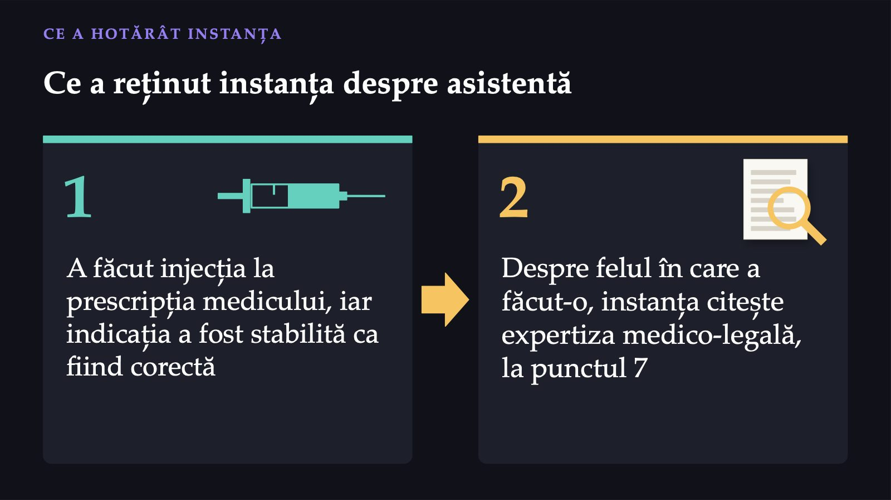
19 / 42Despre asistentă, instanța a reținut două lucruri. Întâi, că a făcut injecția la prescripția medicului, cu o indicație stabilită ca fiind corectă. Apoi, despre felul în care a făcut-o, a citit expertiza medico-legală, la punctul 7. Fraza raportului o citim acum, așa cum este scrisă.
„nu reiese topografia aberanta a injectiei cu fenobarbital”
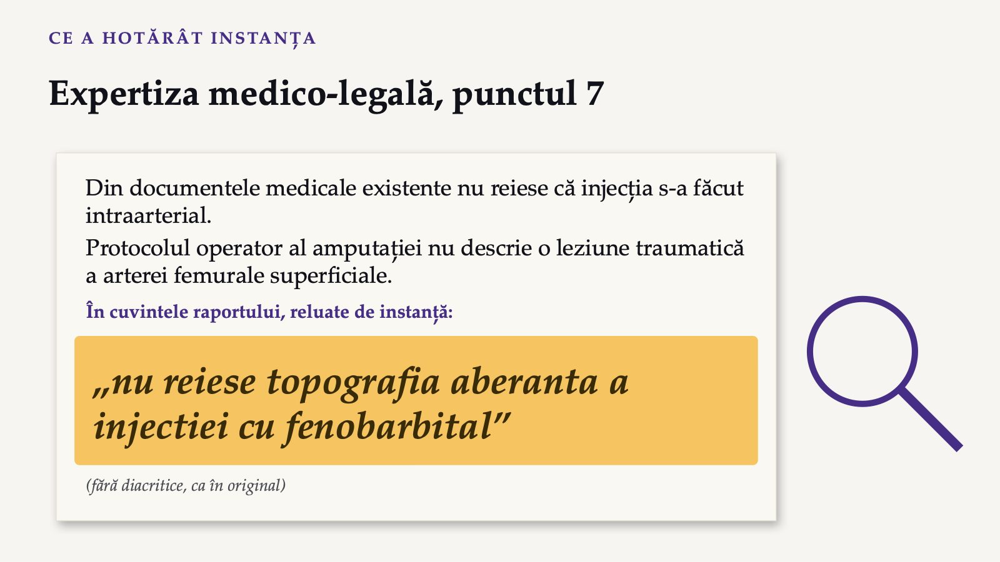
20 / 42Citiți fraza încet. Concluzia expertizei e formulată ca o absență: din documentele existente nu reiese o injecție intraarterială. De aceea neglijența asistentei nu a fost dovedită. Uitați-vă acum în nota voastră la rândul în care ați spus ce ați consemnat și unde.
De ce cântărește expertiza
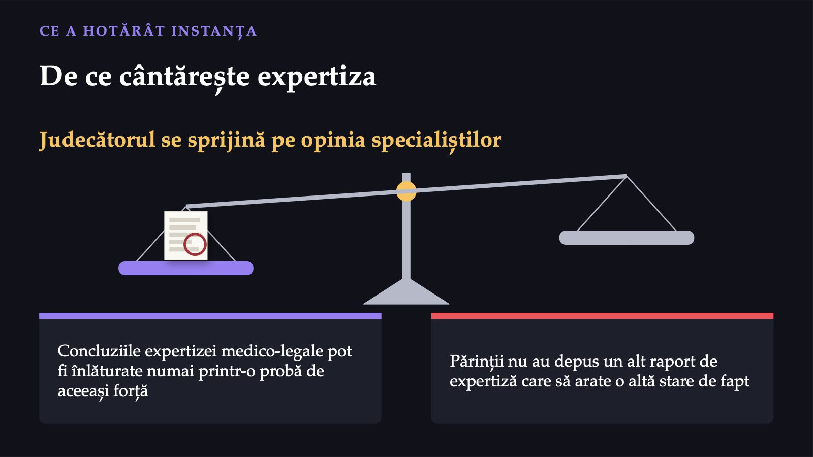
21 / 42Instanța a adăugat că, în sistemul nostru, judecătorul se sprijină pe opinia specialiștilor. Concluziile expertizei pot fi înlăturate numai printr-o probă de aceeași forță, iar părinții nu au depus un alt raport. Întrebările medicale ale dosarului le lămurește expertiza, nu declarația celui cercetat.
Soluția
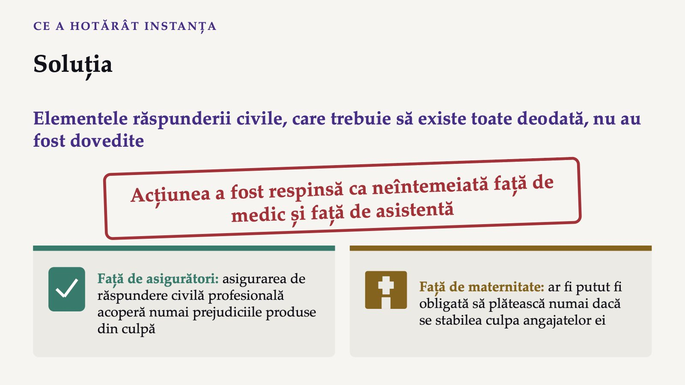
22 / 42Pentru că elementele răspunderii civile nu au fost dovedite, instanța a respins acțiunea ca neîntemeiată, față de toți. Asigurătorii acoperă numai prejudiciile produse din culpă, iar culpa nu fusese dovedită. Maternitatea ar fi plătit numai dacă se stabilea culpa angajatelor ei.
Ce spune și ce nu spune hotărârea
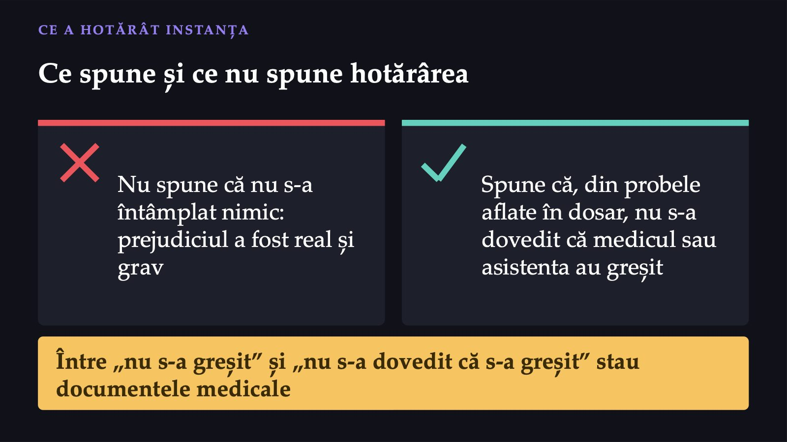
23 / 42Instanța nu a spus că nu s-a întâmplat nimic. A spus că, din ce era în dosar, nu s-a dovedit că cineva a greșit. Deosebirea dintre „nu s-a greșit” și „nu s-a dovedit că s-a greșit” este exact locul în care documentele medicale cântăresc decisiv.
Ce ar fi schimbat o consemnare mai detaliată?
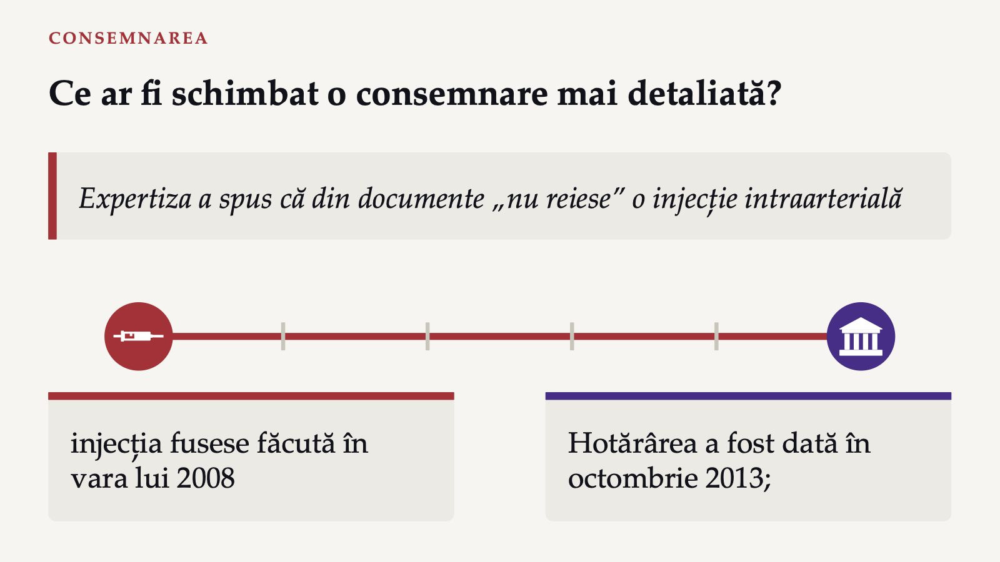
24 / 42Hotărârea a fost dată pe documente. Adeverința maternității a arătat cine a făcut injecția, cu ce medicament, în ce doză și pe ce cale; protocolul operator a arătat ce s-a văzut la operație. După cinci ani de la injecție, ce a rămas scris e aproape tot ce mai poate spune ceva sigur despre ziua aceea. Ce ar fi schimbat o consemnare mai detaliată? Întrebarea nu are un singur răspuns.
?
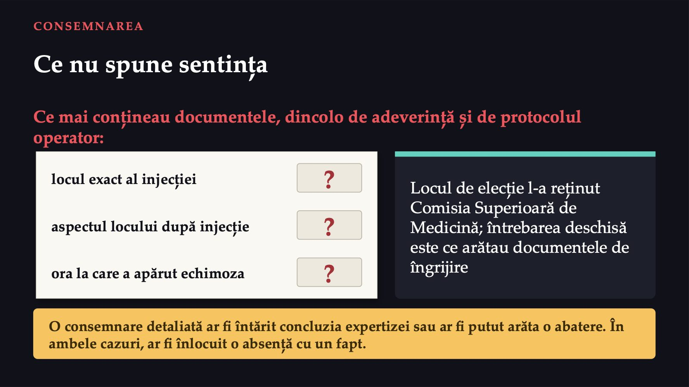
25 / 42Sentința nu spune dacă era notat locul exact al injecției, aspectul locului după injecție sau ora la care a apărut echimoza; nu completăm noi aceste detalii. O consemnare detaliată putea întări concluzia expertizei; tot ea putea arăta o abatere, iar atunci concluzia ar fi fost alta. Pentru asistentă, ca și pentru părinți, un fapt scris la timp valorează mai mult decât o amintire de după cinci ani de la injecție.
Ce ați scrie altfel în notă, acum că știți hotărârea?
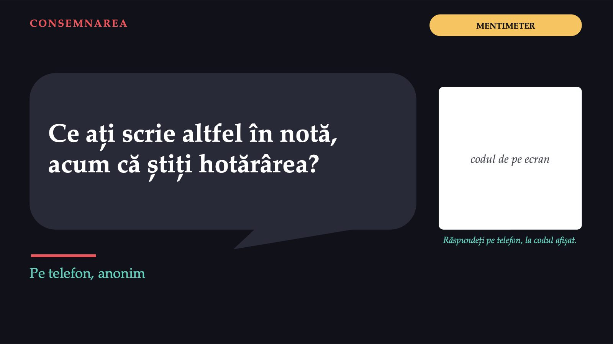
26 / 42Scrieți anonim, prin codul de pe ecran, ce ați scrie altfel în notă acum. Citim câteva răspunsuri.
Rezolvarea se vede în formularul fișei, după ce o predați.
Rezolvarea se vede în formularul fișei, după ce o predați.
Rezolvarea se vede în formularul fișei, după ce o predați.
Rezolvarea se vede în formularul fișei, după ce o predați.
Rezolvarea se vede în formularul fișei, după ce o predați.
Rezolvarea se vede în formularul fișei, după ce o predați.
De mâine, în stagiu
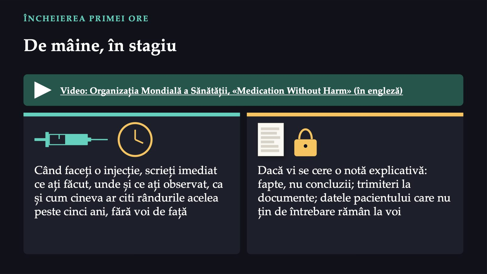
30 / 42Când faceți o injecție, scrieți imediat ce ați făcut, unde și ce ați observat, ca și cum cineva ar citi rândurile acelea peste cinci ani, fără voi de față. Dacă vi se cere o notă explicativă, scrieți fapte, nu concluzii, trimiteți la documente și păstrați pentru voi datele pacientului care nu țin de întrebare.
A doua oră · susținerea portofoliului de lucrări practice
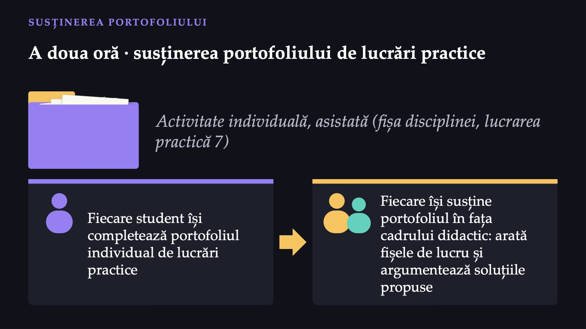
31 / 42Potrivit fișei disciplinei, fiecare student își completează portofoliul individual de lucrări practice. În ora aceasta, fiecare îl susține în fața mea: arătați fișele de lucru și argumentați soluțiile propuse. Ordinea și felul susținerii le anunț acum; timpul se împarte între cei prezenți.
Ce arătați
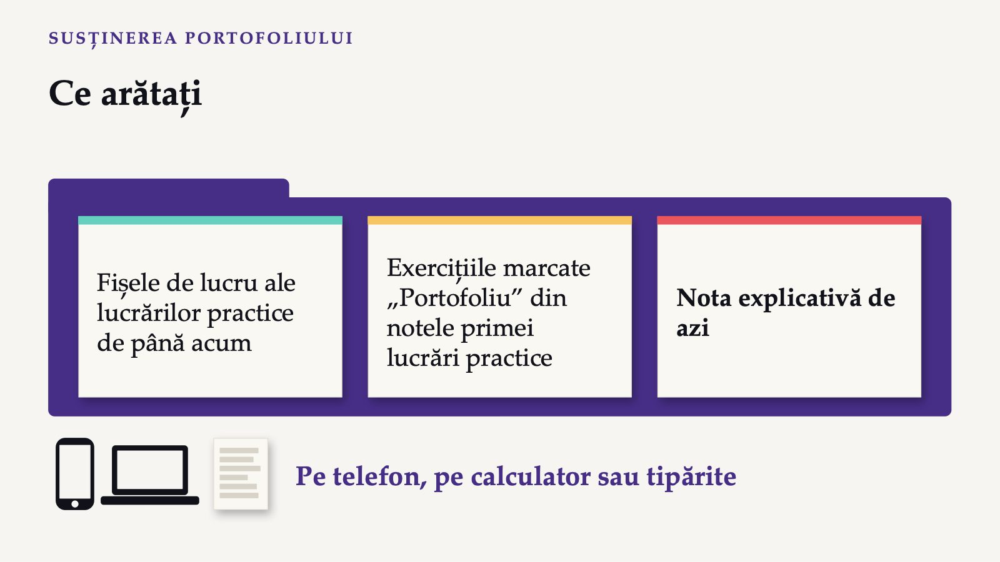
32 / 42Arătați portofoliul în forma de până acum: fișele de lucru ale lucrărilor anterioare și exercițiile marcate „Portofoliu” din prima lucrare, pe telefon, pe calculator sau tipărite. Nota explicativă de azi intră și ea în portofoliu.
30%
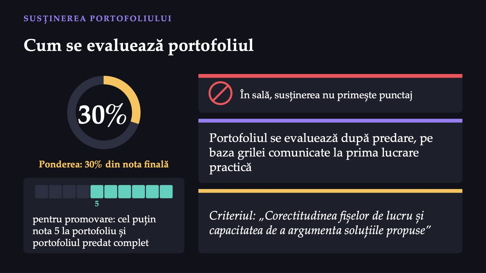
33 / 42În sală nu se acordă punctaj; aceasta este decizia cursului. Portofoliul se evaluează după predare, pe baza grilei comunicate la prima lucrare practică, cum prevede fișa disciplinei, și are ponderea de 30% din nota finală. Între condițiile de promovare, care sunt cumulative, sunt cel puțin nota 5 la portofoliu și portofoliul predat complet.
Pentru fiecare fișă de lucru, trei lucruri
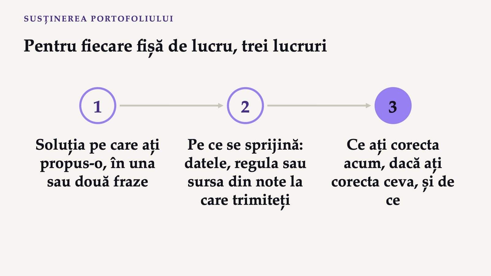
34 / 42Pentru fiecare fișă, spuneți soluția pe care ați propus-o, pe ce se sprijină și ce ați corecta acum. Ca în orice raport profesional, fiecare soluție se apără cu datele, regula sau sursa pe care se sprijină.
Kahoot
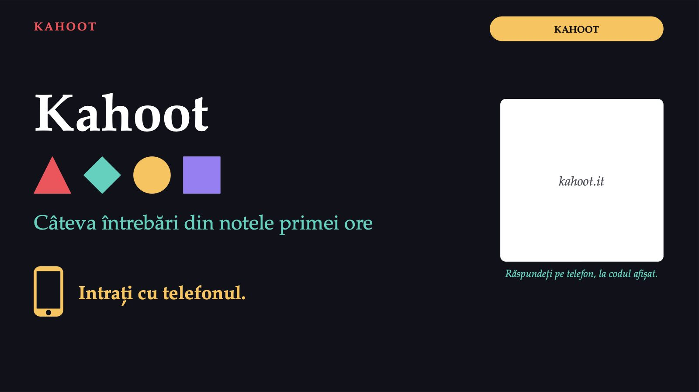
35 / 42Încheiem cu un joc Kahoot, cu câteva întrebări din notele primei ore. Intrați cu telefonul, prin codul de pe ecran.
22
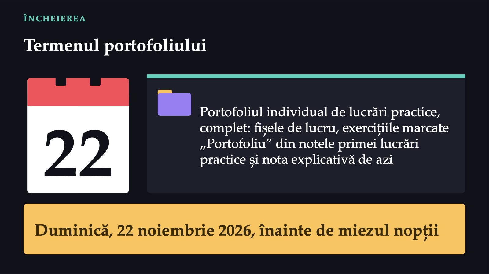
36 / 42Portofoliul individual de lucrări practice, cu fișele de lucru, exercițiile marcate „Portofoliu” din notele primei lucrări practice și nota explicativă de azi, se predă complet până duminică, 22 noiembrie 2026, înainte de miezul nopții. Notele complete ale lucrării, cu hotărârea instanței, apar pe sit după ultima grupă.
Speța veche, regula de azi
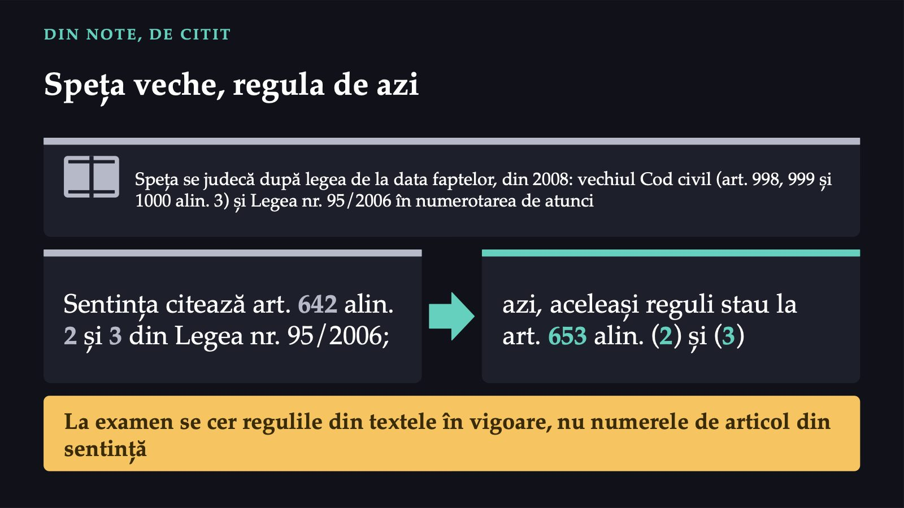
37 / 42Sentința aplică legea din 2008. Regulile de azi le găsiți în textele în vigoare, în forma consolidată de pe Portalul legislativ național; la examen se cer acestea, nu numerele de articol din sentință.
Răspunderea civilă · Legea nr. 95/2006, titlul XVI
![DIN NOTE, DE CITIT Răspunderea civilă · Legea nr. 95/2006, titlul XVI Malpraxisul: „eroarea profesională săvârșită în exercitarea actului medical sau medico-farmaceutic, generatoare de prejudicii asupra pacientului, implicând răspunderea civilă a personalului medical și a furnizorului de produse și servicii medicale, sanitare și farmaceutice” (art. 653 alin. (1) lit. b)) Personalul medical, între care asistentul medical, răspunde pentru prejudiciile produse din eroare, inclusiv din neglijență, imprudență sau cunoștințe medicale insuficiente (art. 653 alin. (2)) Răspunderea civilă nu înlătură răspunderea penală, dacă fapta constituie infracțiune (art. 653 alin. (5))](diapozitive/LP07/038.jpg) 38 / 42
38 / 42Titlul XVI al Legii nr. 95/2006 privind reforma în domeniul sănătății definește malpraxisul și spune cine răspunde. Asistentul medical face parte din personalul medical. Răspunderea civilă nu o înlătură pe cea penală, dacă fapta care a cauzat prejudiciul constituie infracțiune.
Proporția, excepțiile, standardele, asigurarea
![DIN NOTE, DE CITIT Proporția, excepțiile, standardele, asigurarea Toate persoanele implicate în actul medical răspund proporțional cu gradul de vinovăție al fiecăruia (art. 654 alin. (1)) Personalul medical nu răspunde, între altele, pentru dotarea insuficientă, pentru infecțiile nosocomiale sau pentru complicațiile și riscurile acceptate în general ale investigațiilor și tratamentelor (art. 654) Obligația de a aplica standardele terapeutice din ghidurile de practică aprobate la nivel național (art. 666) Asigurarea de răspundere civilă a asistentului: Ordonanța de urgență a Guvernului nr. 144/2008, art. 22 alin. (2) și (3)](diapozitive/LP07/039.jpg) 39 / 42
39 / 42Legea împarte răspunderea pe acte, proporțional cu vinovăția fiecăruia, și numește situațiile în care personalul medical nu răspunde. Obligația de a aplica standardele terapeutice e cea pe care se sprijină și nota explicativă. Asistentul își încheie asigurarea de răspundere civilă și prezintă o copie la încheierea contractului de muncă. Asigurarea de răspundere civilă a asistentului: Ordonanța de urgență a Guvernului nr. 144/2008, art. 22 alin. (2) și (3); comisia pentru cazurile de malpraxis, la direcția de sănătate publică: Legea nr. 95/2006, art. 679.
Răspunderea penală · Codul penal
![DIN NOTE, DE CITIT Răspunderea penală · Codul penal Dosarul de la Craiova a fost unul civil; sentința nu menționează o plângere penală Vătămarea corporală din culpă (art. 196): închisoarea de la 6 luni la 2 ani sau amenda; de la 6 luni la 3 ani sau amenda, când vine din încălcarea dispozițiilor legale sau a măsurilor de precauție cerute de exercitarea unei profesii Divulgarea secretului profesional (art. 227): închisoarea de la 3 luni la 3 ani sau amenda; acțiunea penală pornește la plângerea prealabilă a persoanei vătămate 3 luni 6 luni 2 ani 3 ani art. 196 art. 196 art. 227](diapozitive/LP07/040.jpg) 40 / 42
40 / 42Secretul profesional se încadrează la art. 227 din Codul penal, nu la art. 196, care este vătămarea corporală din culpă.
Răspunderea disciplinară
 41 / 42
41 / 42Sunt două răspunderi disciplinare distincte: față de Ordin și față de angajator. Ce prezentarea cursului numește răspundere „administrativă” este tot răspunderea disciplinară față de angajator, după Codul muncii; răspunderea contravențională din Legea nr. 46/2003, art. 37, este alta.
Drepturile pacientului: confidențialitatea și consimțământul
![DIN NOTE, DE CITIT Drepturile pacientului: confidențialitatea și consimțământul Informațiile privind starea pacientului, rezultatele investigațiilor, diagnosticul, prognosticul, tratamentul și datele personale sunt confidențiale, chiar și după decesul acestuia; pot fi furnizate numai cu consimțământul explicit al pacientului sau dacă legea o cere în mod expres (Legea nr. 46/2003, art. 21–23) Nerespectarea lor atrage, după caz, răspunderea disciplinară, contravențională sau penală (art. 37 alin. (1)) Codul de etică, art. 30: intervenția medicală numai după consimțământul în cunoștință de cauză al pacientului sau al reprezentantului legal; la un nou-născut, al părinților](diapozitive/LP07/042.jpg) 42 / 42
42 / 42Confidențialitatea ține și după decesul pacientului, iar excepțiile le stabilește legea. La un nou-născut, reprezentanții legali sunt părinții.
Săgeți sau spațiu: navigare · O: vedere de ansamblu · N: notele prezentatorului · F: ecran complet · Esc: închidere